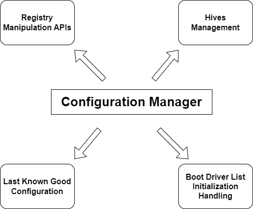
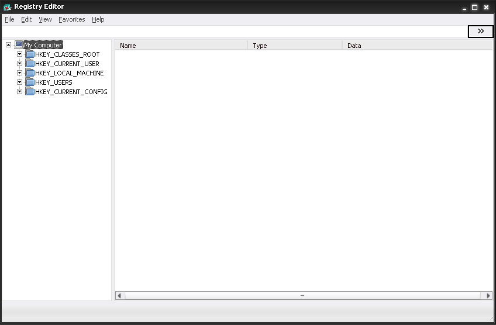
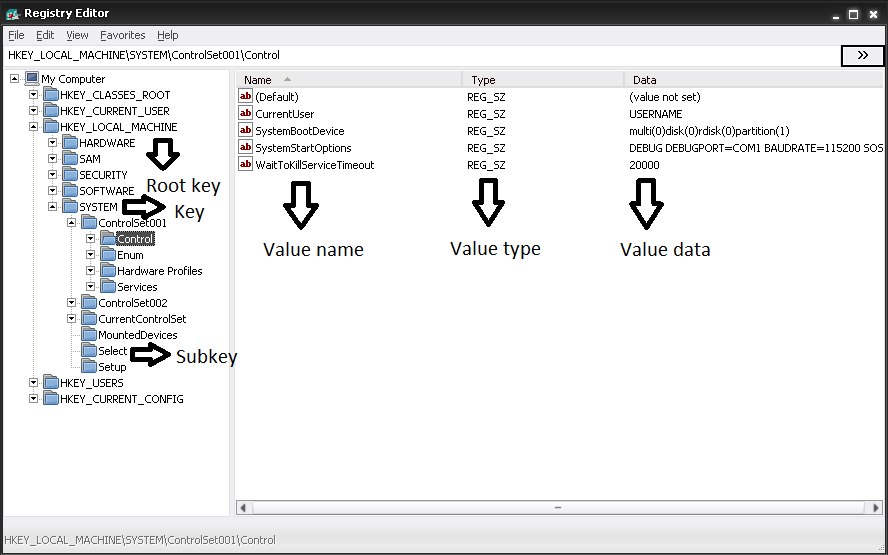
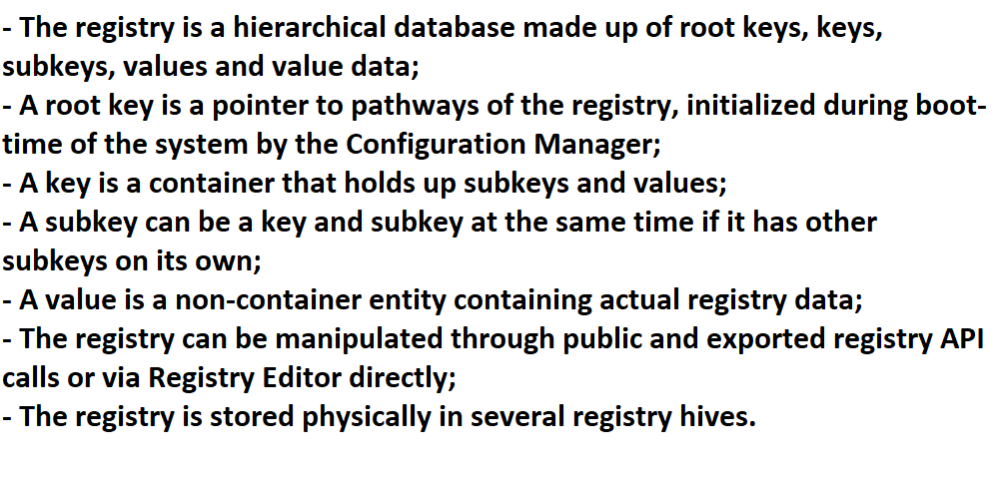
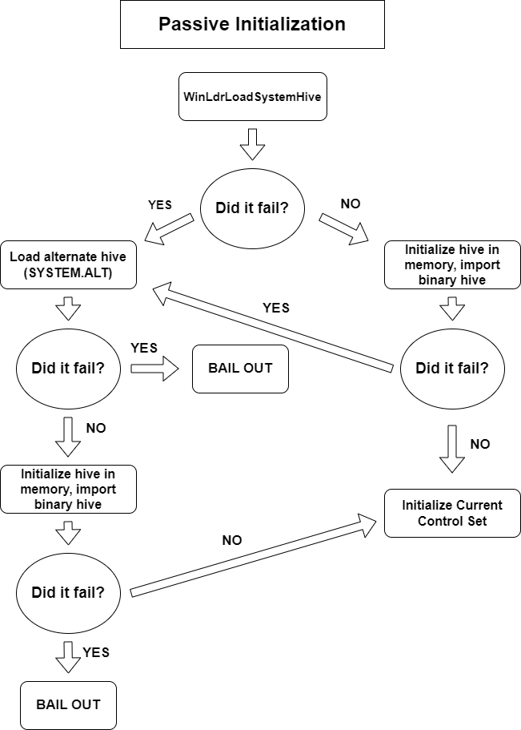
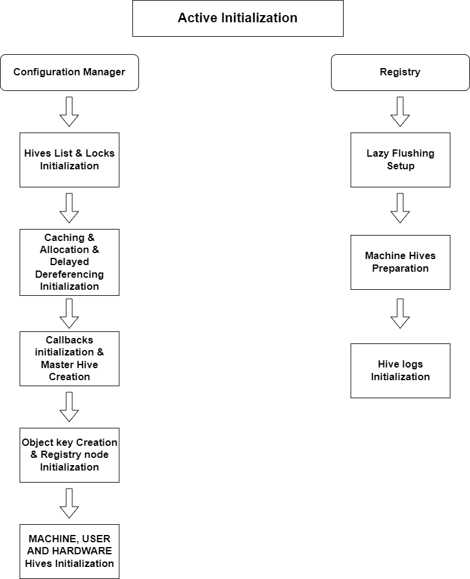

You wake up in the morning, have your delicious choccy milk with biscuits, prepare yourself for work and head up to your office and doing your usual boring bureaucratic stuff. Out of a sudden a power outage occurs and you throwing some funky Aussie insults because you've had unsaved work in your PC, so like other employees in the office. Hey, at least your boss is kind and understanding (I hope?) and feels your frustration. Your PC shutting down unexpectedly due to a outage or a hardware problem could happen to anyone, to your girlfriend, your boyfriend, your favorite politician, your best friend, your most annoying buddy, and so on. It could've been worse...
Prior to Windows NT consumers, enterprise businesses, organizations and so on knew of Windows 9x editions such as Windows 95, 98 and Millennium Edition. During that time the Registry of such systems didn't have fault proof and tolerance implementations against scenario that can tear apart the Registry such as abnormal shutdown from a power outage or system malfunction. A corrupted Registry is a literal sentence to a Windows re-installation on your PC. Only with the start of Windows NT things have gotten more serious when it comes to system reliability, fault tolerance and whatnot. Windows NT provides implementations and protection against impending doom corruptions of the Registry, such as automatic backup of the Registry itself through "logs", healing and repair mechanisms during boot up of the system as well as Registry validation and checks.
In this chapter of "Introduction to the NT kernel development" I will be explaining the basic aspects of the Registry internals, the nature of corruptions and why do they happen and how does the Registry heal itself. More specifically, I will be documenting a critical component of the NT kernel, the Configuration Manager.
If you stumble upon the ntoskrnl directory you'll see a folder called config, serving as the infrastructure code for the Configuration Manager. The Configuration Manager
whose kernel prefix goes by Cm is a component of the Executive layer of the NT kernel that is the skeleton of the Registry. In other words, the Configuration Manager is a formal way of saying "Registry", for people that aren't actually aware of. It
implements the critical algorithms necessary for what it makes the "Registry", configuration data management within the Registry, NT API system calls interface so that outside callers can communicate with the Registry, etc.
The Configuration Manager also takes responsibility on the boot up of the system.
The Registry is a hierarchical database consisting of arranged data set up in structured place to store configuration information of a system. For example user specific data such as applications data, critical system data, hardware information related data,
and a whole lot more. You probably used the Registry Editor program that comes with your Windows installation quite a lot of times to do some tasks or tweak certain settings. You have seen names like HKEY_LOCAL_MACHINE or HKEY_CURRENT_USER, they're kind of strange
looking, right? For simplicity we call them root keys (the HK prefix stands for Handle Key). But the adventure doesn't really stop here as you stumble within the Configuration Manager you will see weird terminologies like hives, cells,
bins, roots, leaves, etc. These are all of the entities that compose the skeleton of the Registry and its functionality as a database.

The Configuration Manager comes with a subset manager subsystem that deals solely with hive management, called the Hive Manager. This is not an official name envisioned by Microsoft nor ReactOS but just a placeholder to better understand the two distinctive parts
of the component, albeit in one single core in the Executive. The Hive Manager is responsible for the internal handling of a registry hive data, those being the hive cells, bins, leaves and so on. It also provides hive initialization code (that can be triggered with the HvInitialize function).
Speaking of functions themselves, they are annotated with the Hv prefix, Hvp for private functions.
The Configuration Manager itself on the other hand deals with the rest of the implementation of the Registry such as lazy flushing mechanism (which I will be explaining that later), internal Configuration Manager APIs, etc. The functions that embody within such manager are annotated with the Cm prefix, Cmp for private functions.
As we will dwell into the deep internals of the Configuration Manager, most of the time you will hear the word "hive" and getting somewhat confused how is it related to the topic about the registry. Generally when you hear the word "hive" you are going to think about a bee-hive, right? You're not alone! The developers at Microsoft who worked for the registry adopted this word as an inside joke about honey bees and whatnot. Raymond Chen confirms this.
The developer who was responsible for the registry is a mean person! He may hate bees, but in this article we will instead show love. Honey bees are cute! Anyway going back to our serious stuff, in order to understand the meaning of each bee terminology used in the registry internals, let's make an analogy. A hive is typically a registry file, a hive bin (or just simply called bin) is the space used to store cells (in the context of honey bees stuff that would be the hexagonal prismatic shape). And cells are the actual registry data such keys, key values, value data, etc. In the context of bees, a cell would be a bee pupae, a larvae, pollen, honey and such.
For those who toyed around with the registry by using the Registry Editor tool (aka regedit.exe), you may have already been familiarized with its semantics, properties and such. But for those who don't, try to launch that tool and you will see something like this:

So, a bunch of directories in the left and that is pretty much what is there. What's so special here you may ask? Well, these "directories" (or "folders") on the left that what you would call them are not directories per se but instead they are handles to registry root keys
or in other words, they are registry points that lead to the specific registry data of your system. Think of them as registry hints more or less. The HKEY acronym literally stands for Handle to a Key and what comes after the acronym is the scope of what kind of
registry data should contain inside a root key. Each of these root keys have specific meaning and purpose behind them. The meaning of the following root keys are:
This root key contains data about applications that are installed in your computer. Typically such information is the filename extension that a specific application adds support for it. Basically whenever you install an application such as MediBang Paint, the associated file extensions
of this application will be added into this root key. This root key is a merged view of two registry keys in HKLM\Software\Classes and HKCU\Software\Classes respectively. The abbreviation of this key is HKCR.
This root key contains data about the current logged-in user. A peculiarity of this key is that it points to one of the user key from HKEY_USERS, associated with a security identifier (or SID) representing the user in this context. Whenever a user logs in to the system
its associated user data hive gets loaded in memory and pointed to this root key. Only one user hive profile is loaded. The registry data of each user is stored in NTUSER.DAT file. The abbreviation of this key is HKCU.
This root key contains about the computer. Such information about the computer include the device drivers installed on the system, system boot startup control parameters, critical system settings, installed software and miscellaneous data. The following root key links several physical
registry hives on the system, of which are SAM, SECURITY, SYSTEM, SOFTWARE and HARDWARE. The only exception here is HARDWARE as it is not a physical hive per se but instead is a volatile hive created on run-time
during the bootstrap of the system and stored in memory, aka RAM (hence the word "volatile"). Volatile hives vanish as soon as the system shuts down. More of that stuff I will explain in detail later. The abbreviation of this key is HKLM.
This root key contains data about each user profiles. Tipically only one user profile that corresponds to the interactively logged-in user gets loaded in memory and linked to the HKEY_CURRENT_USER root key. The identity of a user is denoted by a security identifier (SID).
The abbreviation of this key is HKU.
This root key contains data about the current configuration of a hardware profile being effectively used. Pretty much as HKEY_CURRENT_USER, this key points to the contents of HKLM\System\CurrentControlSet\Hardware Profiles\Current key. The purpose of this root key
is to differentiate between the standard hardware configuration and the current one being used, and to easily access such current hardware profile through this key. The abbreviation of this key is HKCC.
There are several different kinds of root keys such as HKEY_PERFORMANCE_DATA and HKEY_DYN_DATA although I am not going to talk about those. As you will stumble upon these root keys you will find a plethora of keys with a multitude of registry values and value data.
In this scenario your Registry Editor would look like this:

In this screenshot I marked the following contents of the registry describing what are the keys, values and value data. As you can see, a key is a container (think of it as a directory more or less) that holds registry values, a subkey is a container as well but succeeds a key
(basically it is a sub-directory). A subkey that contains several subkeys is a key and subkey at the same time. A value is like a file, bound to the key, and contains the actual registry data. Such registry data is called a value data. In this example, the following value is of
REG_SZ type which means it is a null-terminated string-type value that contains a string as data. There are other types of values although I am not going to explain those for now.
An important aspect to keep in mind is that, while the registry on itself is a hierarchical database, the real presentation of the registry does not look like you see from Registry Editor. What you see instead is a translated presentation of the registry so that a human could interact with the registry whether through registry API calls or directly through the Registry Editor itself. I am going to further explain it in the next section. Now, to summarize what we learnt so far...

As discussed earlier, the real presentation of the registry is based upon a set of physical files stored on the system called hives. A hive is a file created and initialized by the Configuration Manager of the kernel, of which the structures of a hive are not publicly exposed. That is, a registry hive cannot be manipulated directly since it is the kernel that can understand what are the contents inside a hive. Instead, whenever a registry API call is invoked to write into the registry or a key or value is changed directly via the Registry Editor, the Configuration Manager is responsible to manage the target hive file.
The hives are stored on their specific location, ReactOS\system32\config. On the same location you will find other registry files such as those that end with .LOG extension although I will talk about registry logs later. The internal contents of a registry hive is in
binary form. For more details about the structure of a hive itself, I will explain it down below.
The initialization of the registry is done in two different phases -- the passive phase and active phase. In passive phase the entirety of the registry database and configuration are not initialized by the kernel but instead only one hive is loaded in memory during boot-time
by FreeLdr (or also called FreeLoader, our bootloader). The hive file in question being loaded is the SYSTEM hive. The purpose of this phase is to grab critical data from the registry such as boot drivers list and Last Known Good Configuration (LKG) information in order to continue
execution of the bootstrap procedure.

During the early stages of boot initialization, FreeLdr attempts to load the primary SYSTEM hive by invoking the WinLdrLoadSystemHive function. It does that by opening the target hive within the configuration directory where other hives are stored at, it allocates some chunk
of memory to hold the read data from the file and then with the said chunk of memory is used to import the binary data of the SYSTEM hive that is present in memory. The procedure of importing binary data is done by initializing a hive descriptor by invoking HvInitialize and
after that the registry hive is validated with CmCheckRegistry to ensure the consistency of the registry hive. If one of the following operations fail, FreeLdr will attempt to load the alternate variant of the hive, aka SYSTEM.ALT.
The initialization of the registry can continue forward ONLY WHEN the passive initialization has completed successfully. That is, with the fully loaded SYSTEM hive in memory, FreeLdr will pass the hive memory pointer to the kernel through a LOADER_PARAMETER_BLOCK
structure, in RegistryBase pointer respectively. This is where the active phase kicks in...
During the active phase the initialization procedure is divided among two parts -- Configuration Manager and Registry startup. The startup of the Configuration Manager is handled by the CmInitSystem1 function, which is responsible to initialize Configuration Manager internal
structures and pointers such hives list, locks, initializing the registry caching, the registry root node, object keys, etc. This procedure is done when the kernel initializes the components of the Executive layer and the code of the Configuration Manager initialization can be found here.
The initialization of the registry itself however is done by NtInitializeRegistry.

Bear in mind that registry initialization occurs when the Configuration Manager has fully started up and is effectively operational, or in other words, the Configuration Manager is initialized before the registry. The registry is initialized during Winlogon startup (specifically here).
During this phase, the following SAM, SECURITY, SOFTWARE and SYSTEM hives are loaded. An interesting aspect though is that I did talk earlier that FreeLdr passes a pointer to SYSTEM hive data in memory to the kernel, right? This pointer is used
in the CmpInitializeSystemHive function to initialize a newly fresh hive descriptor from an already loaded hive data in memory, with the newly set up hive added to the list of machine hives.